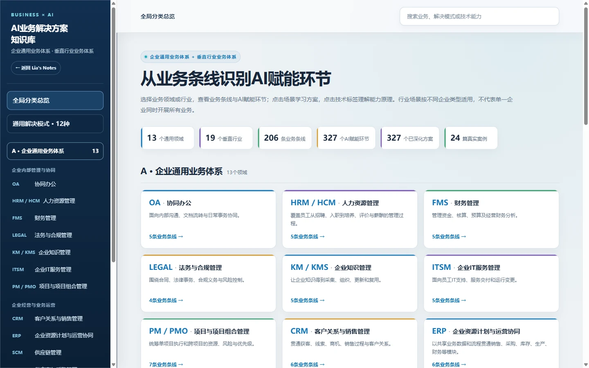

ONGOING COLLECTION / BUSINESS × AI
AI 业务解决方案知识库
从业务条线出发，系统整理企业通用业务和垂直行业中的 AI 应用机会，并把每个场景拆解为业务问题、传统方案、AI 介入方式、技术路线、实施前提、人工边界和验证指标。
01 / PRODUCT PREVIEW
界面展示
通过业务体系、通用解决模式、技术能力和真实案例四条路径浏览内容。

进入知识库 ↗02 / INFORMATION ARCHITECTURE
内容如何组织
先定位业务问题，再判断传统数字化能力和 AI 的合理分工，最后明确实施与验证条件。
01 / BUSINESS
业务场景
按 13 个企业通用领域和 19 个垂直行业查找具体业务条线。
02 / PATTERN
解决模式
把跨行业问题归纳为知识问答、识别、分析、预测、流程与 Agent 等 12 种模式。
03 / TECHNOLOGY
技术能力
区分规则、搜索、RAG、大模型、工作流、优化算法及系统接口的职责。
04 / DELIVERY
落地边界
同步记录数据前提、系统依赖、人工审核、异常回退和效果验证指标。
03 / DESIGN PRINCIPLES
设计原则
01 / BUSINESS FIRST
先理解业务
从实际流程、角色、频率与问题出发，不先假设必须使用 AI。
02 / RIGHT TOOL
选择合适能力
确定性条件优先使用规则和系统计算，复杂理解与生成再交给模型。
03 / VERIFIABLE
结果可以验证
每个方案都明确前提、人工边界和可观测指标，避免停留在功能描述。
想查看完整场景库？进入交互式知识库，按行业、业务条线或技术能力继续浏览。
打开知识库 ↗项目说明：这是个人持续整理的方案研究与学习知识库，不代表其中所有场景均已在真实企业中部署或产生效果数据。